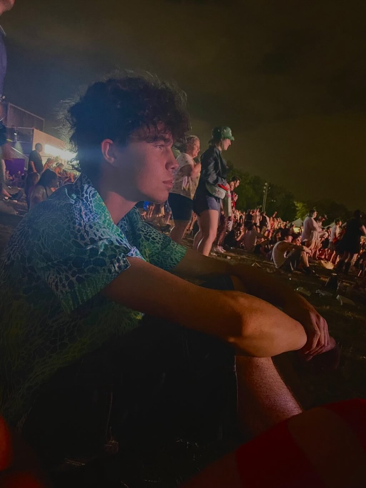

Je m'appelle Manuel Bastos et je suis un nouvel élève du collège Lionel-Groux.
J'ai 17 ans et c'est ma toute première session au cegep et je fais une technique en informatique
Mes passions sont le football (ou bien le soccer pour les non-européens), le football américain, la
musique rock et les jeux vidéos, particuliairement EAFC. Je fais de la batteire quand je suis pas sur un terrain de soccer ou avec mes amis.